以下 12 张为概念样稿（手写可编辑 SVG），不是实机截图。实机基线见 reports/art/before/。三个方向使用相同房间、相机与战斗瞬间，便于公平比较。文档：docs/art/02_ART_DIRECTION.md。
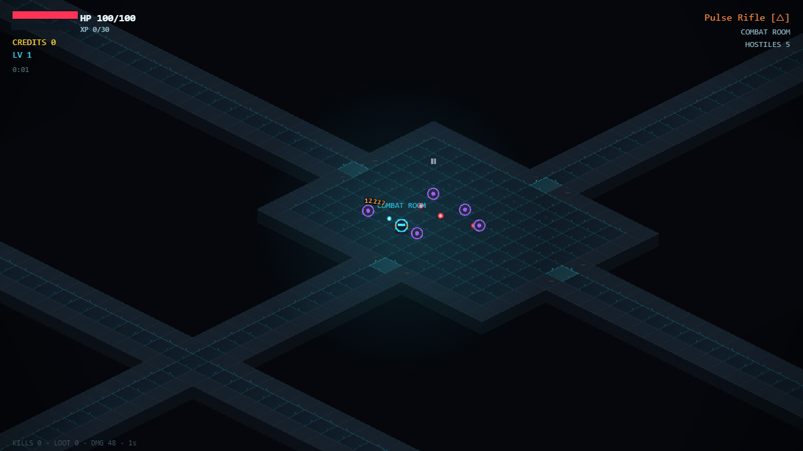
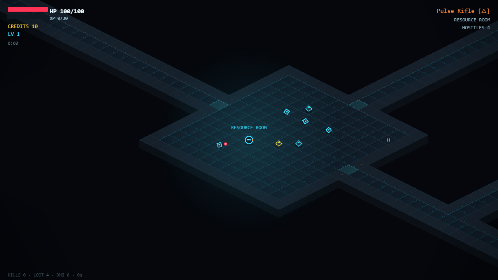
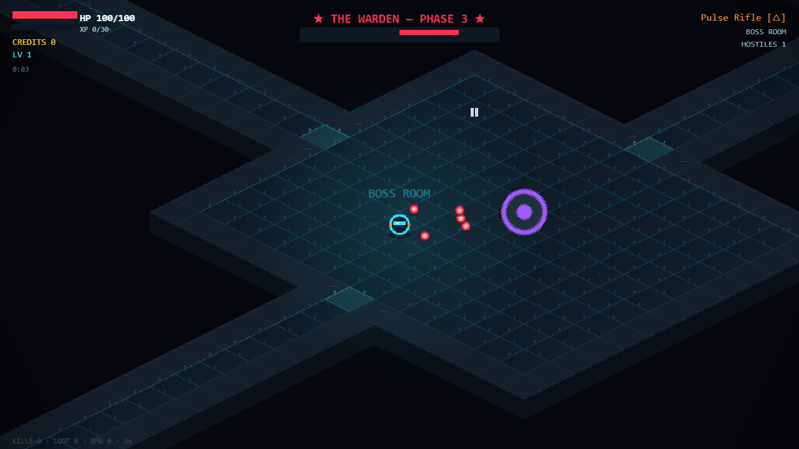
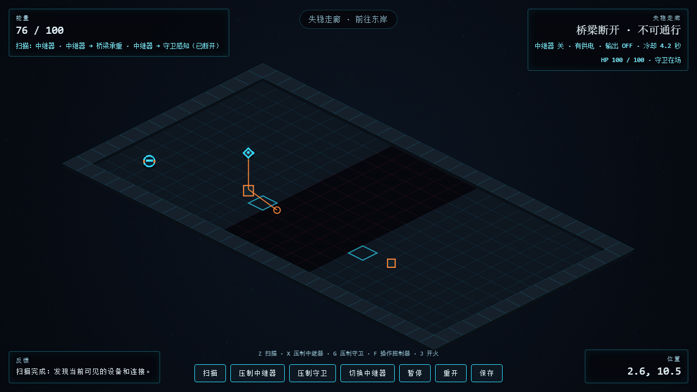
被观测的世界才被"画出"。骨白测绘墨线 + 石墨体块；冷蓝稳定信号、青色可交互、琥珀未知、朱红敌对。
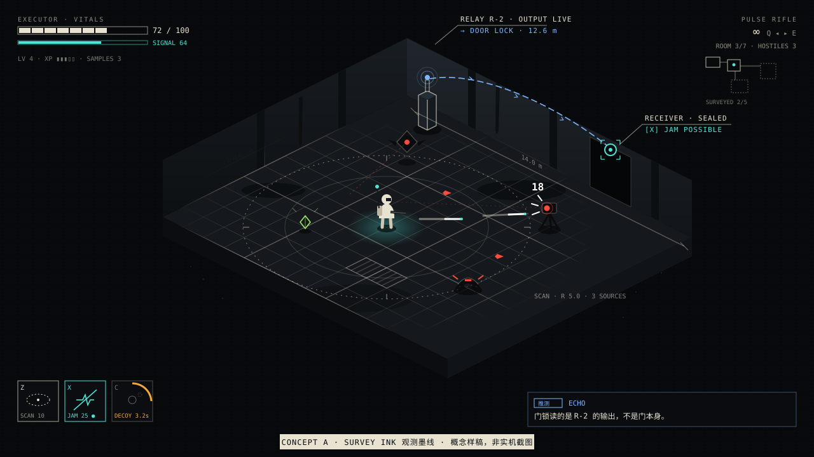
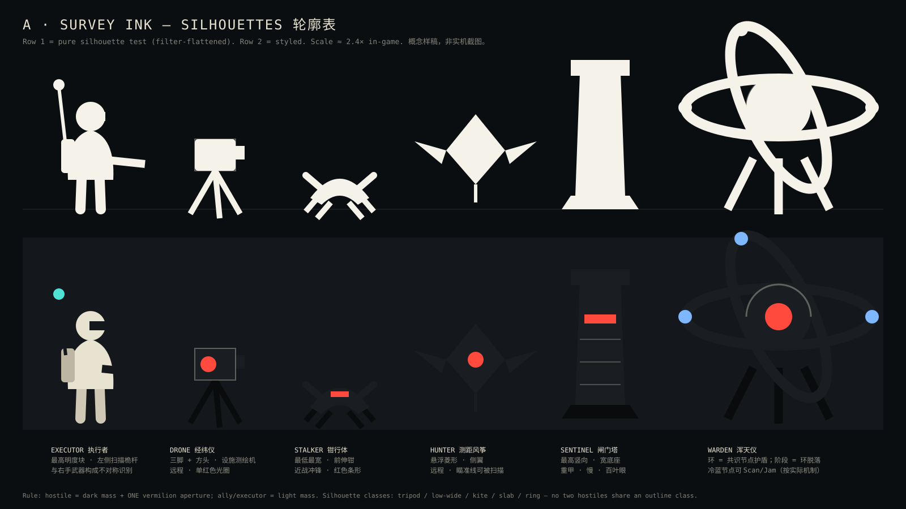
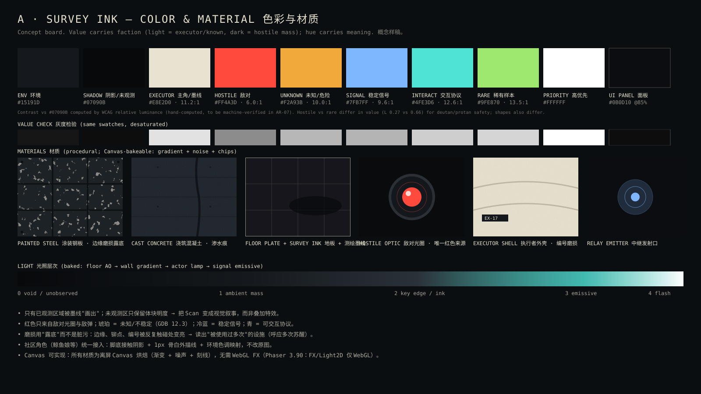
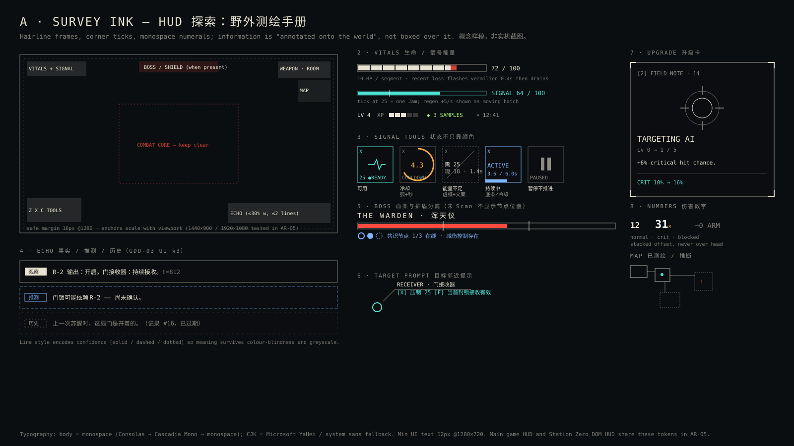
巨构混凝土、钠灯暖光、氧化铜绿、物理电缆承载信号；人在基础设施里极小。
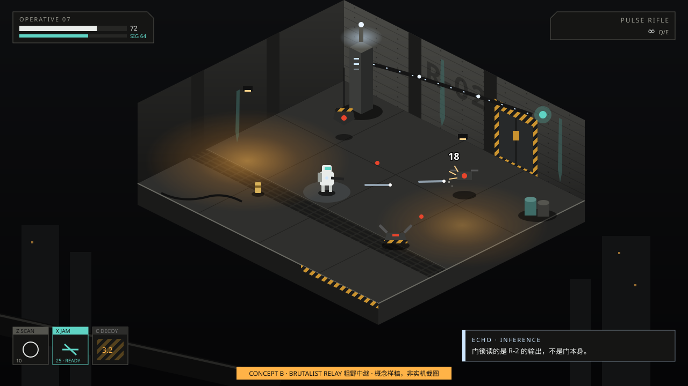
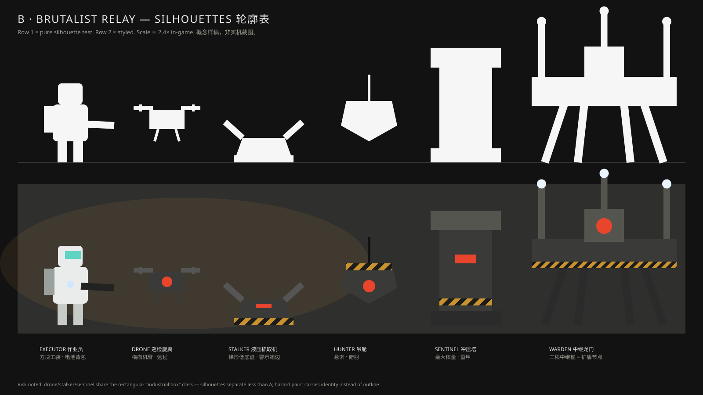
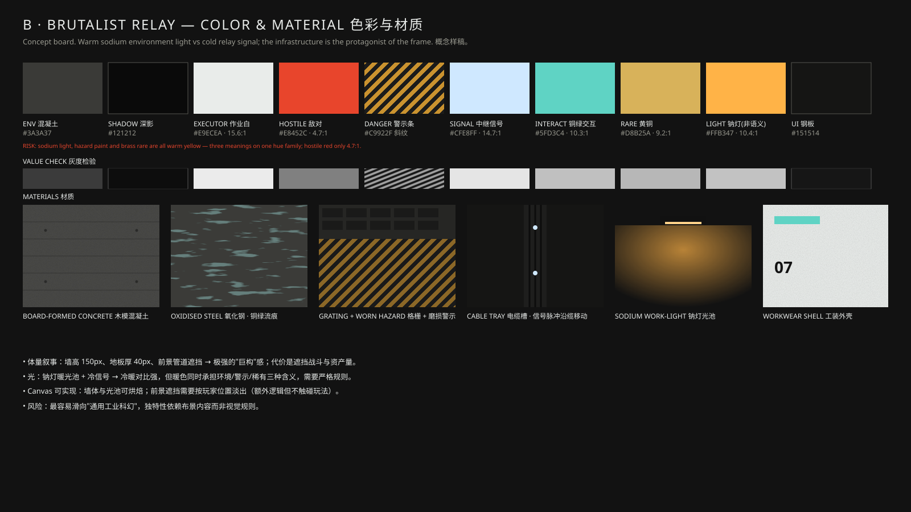
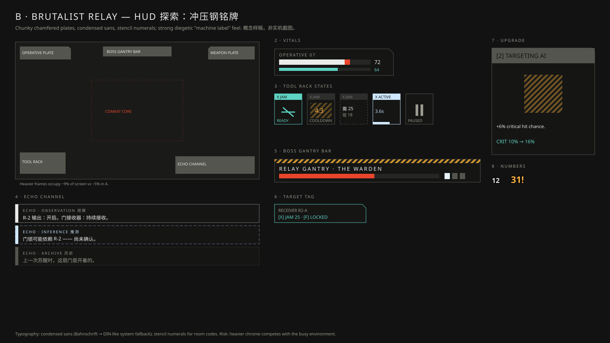
暗场中的瓷白实验室；未达成共识的状态以 C/M/Y 印版失准呈现，位移量 = 不稳定程度。
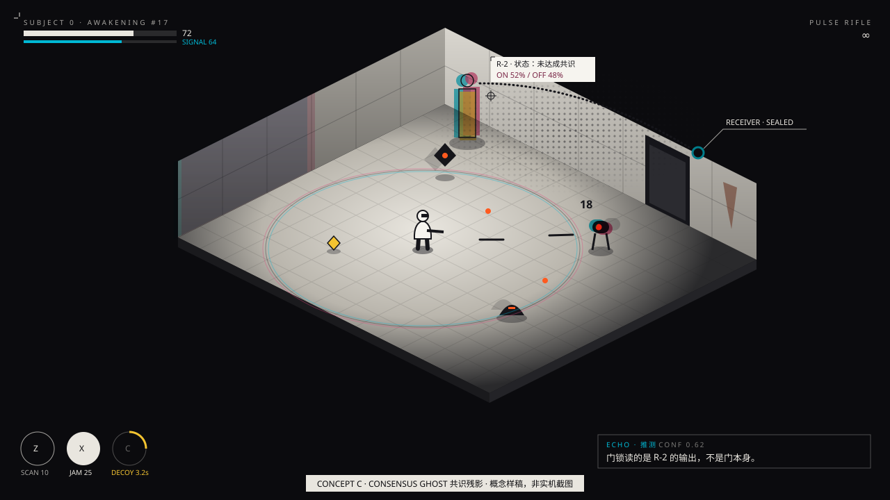
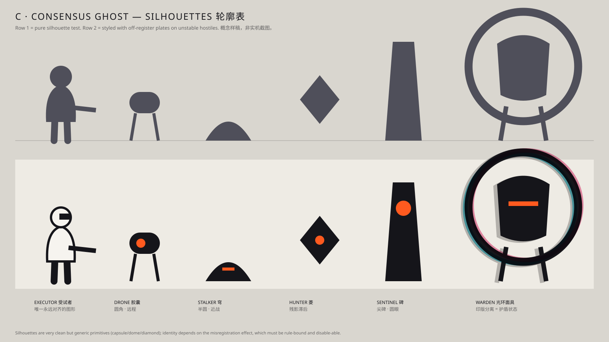
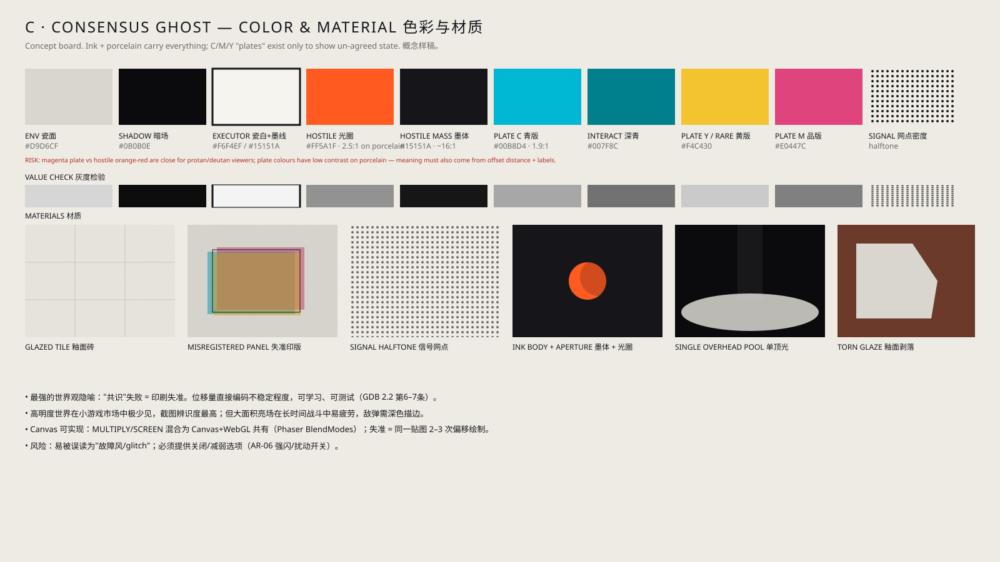
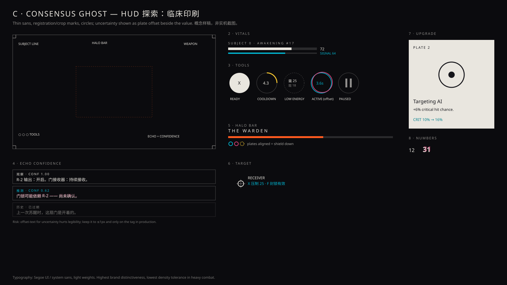